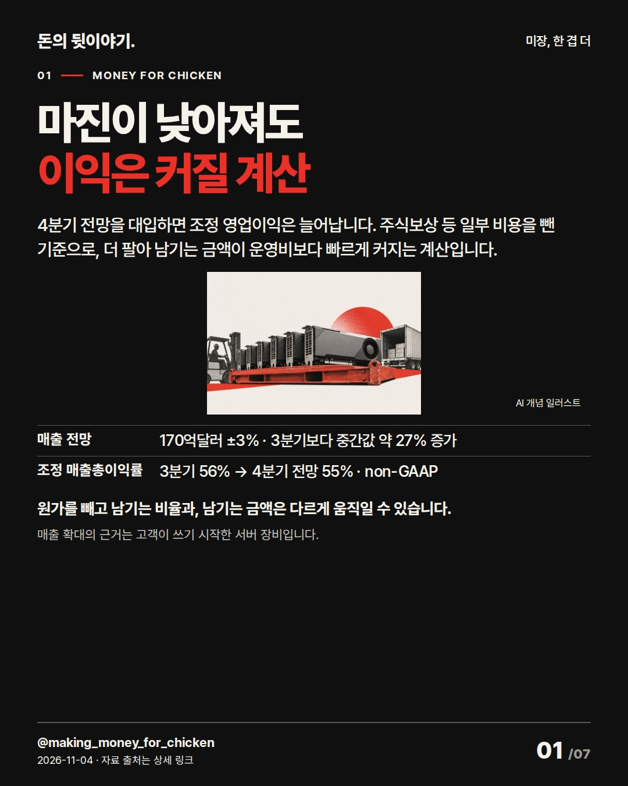
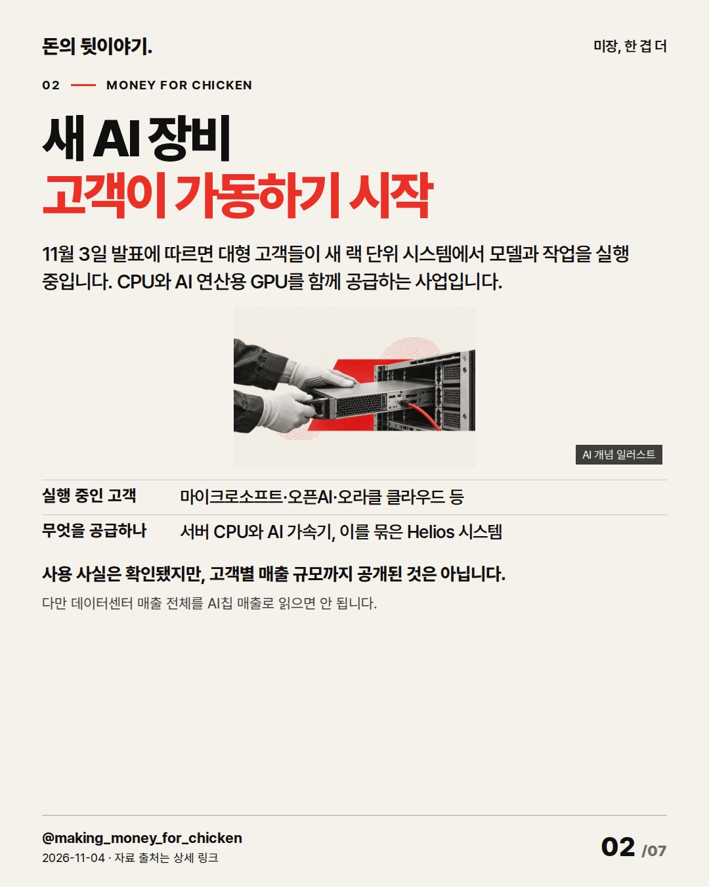
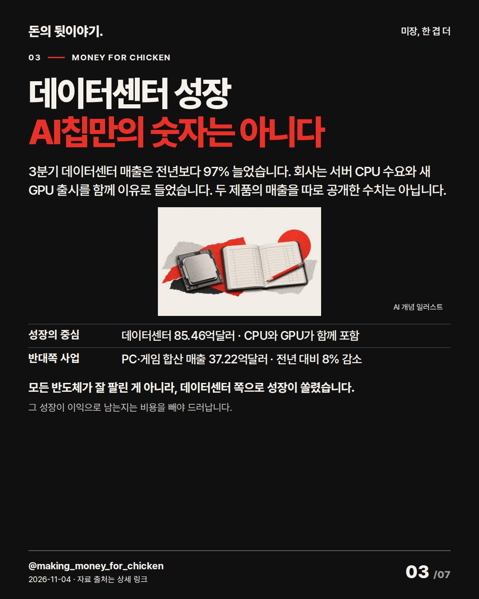
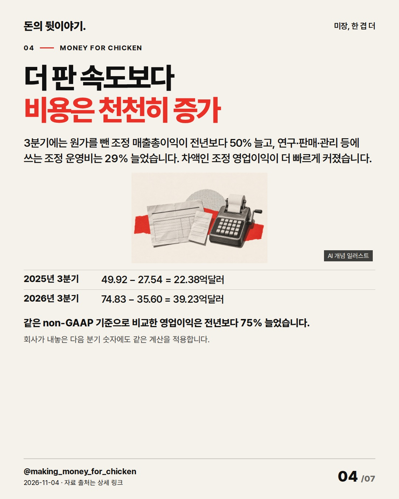
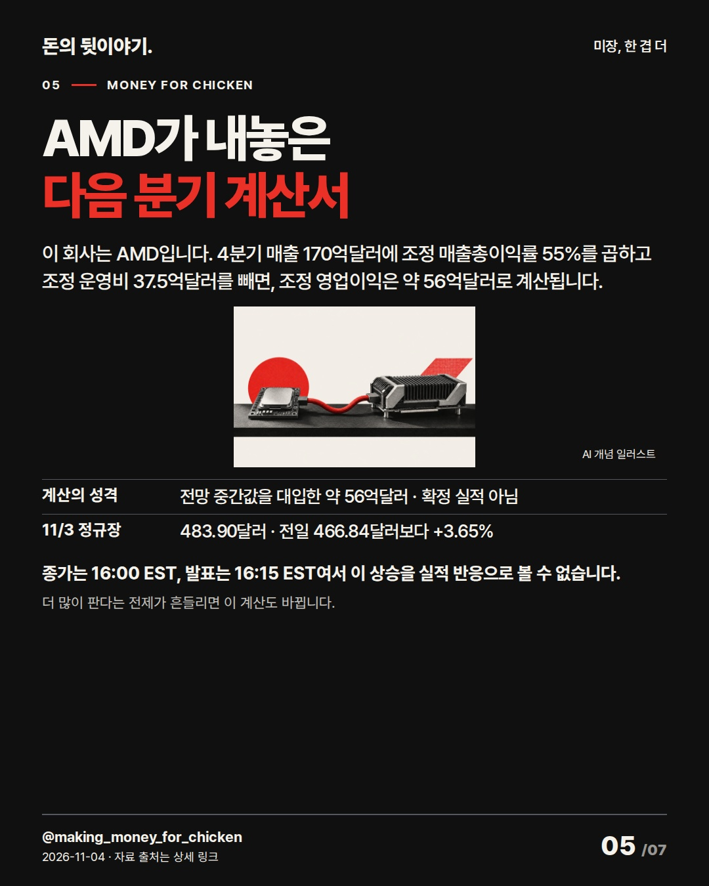
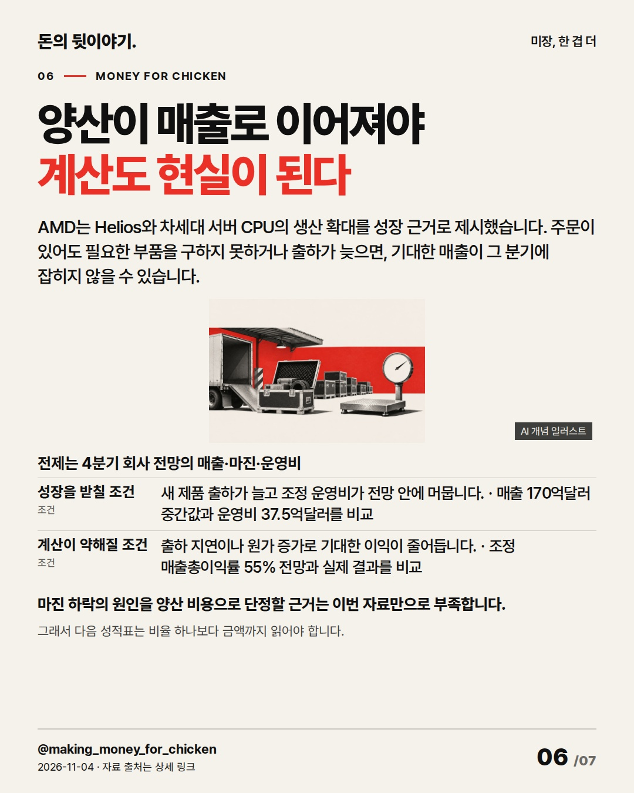

마진이 내려간다고 버는 이익까지 줄어드는 건 아닙니다. 더 팔아서 남기는 금액에서 운영비까지 빼면, AMD의 다음 분기 전망이 다르게 읽힙니다. AMD(AMD) #미국주식 #AMD #기업실적

4분기 전망을 대입하면 조정 영업이익은 늘어납니다. 주식보상 등 일부 비용을 뺀 기준으로, 더 팔아 남기는 금액이 운영비보다 빠르게 커지는 계산입니다.
원가를 빼고 남기는 비율과, 남기는 금액은 다르게 움직일 수 있습니다. 매출 확대의 근거는 고객이 쓰기 시작한 서버 장비입니다.
AI 생성 개념 일러스트 · 실제 현장이나 공식 제품 사진이 아닙니다.
11월 3일 발표에 따르면 대형 고객들이 새 랙 단위 시스템에서 모델과 작업을 실행 중입니다. CPU와 AI 연산용 GPU를 함께 공급하는 사업입니다.
사용 사실은 확인됐지만, 고객별 매출 규모까지 공개된 것은 아닙니다. 다만 데이터센터 매출 전체를 AI칩 매출로 읽으면 안 됩니다.
AI 생성 개념 일러스트 · 실제 현장이나 공식 제품 사진이 아닙니다.
3분기 데이터센터 매출은 전년보다 97% 늘었습니다. 회사는 서버 CPU 수요와 새 GPU 출시를 함께 이유로 들었습니다. 두 제품의 매출을 따로 공개한 수치는 아닙니다.
모든 반도체가 잘 팔린 게 아니라, 데이터센터 쪽으로 성장이 쏠렸습니다. 그 성장이 이익으로 남는지는 비용을 빼야 드러납니다.
AI 생성 개념 일러스트 · 실제 현장이나 공식 제품 사진이 아닙니다.
3분기에는 원가를 뺀 조정 매출총이익이 전년보다 50% 늘고, 연구·판매·관리 등에 쓰는 조정 운영비는 29% 늘었습니다. 차액인 조정 영업이익이 더 빠르게 커졌습니다.
같은 non-GAAP 기준으로 비교한 영업이익은 전년보다 75% 늘었습니다. 회사가 내놓은 다음 분기 숫자에도 같은 계산을 적용합니다.
AI 생성 개념 일러스트 · 실제 현장이나 공식 제품 사진이 아닙니다.
이 회사는 AMD입니다. 4분기 매출 170억달러에 조정 매출총이익률 55%를 곱하고 조정 운영비 37.5억달러를 빼면, 조정 영업이익은 약 56억달러로 계산됩니다.
종가는 16:00 EST, 발표는 16:15 EST여서 이 상승을 실적 반응으로 볼 수 없습니다. 더 많이 판다는 전제가 흔들리면 이 계산도 바뀝니다.
AI 생성 개념 일러스트 · 실제 현장이나 공식 제품 사진이 아닙니다.
AMD는 Helios와 차세대 서버 CPU의 생산 확대를 성장 근거로 제시했습니다. 주문이 있어도 필요한 부품을 구하지 못하거나 출하가 늦으면, 기대한 매출이 그 분기에 잡히지 않을 수 있습니다.
마진 하락의 원인을 양산 비용으로 단정할 근거는 이번 자료만으로 부족합니다. 그래서 다음 성적표는 비율 하나보다 금액까지 읽어야 합니다. 전제는 4분기 회사 전망의 매출·마진·운영비
AI 생성 개념 일러스트 · 실제 현장이나 공식 제품 사진이 아닙니다.지금 AMD의 전망은 마진 하락보다 판매 확대의 힘이 큰 그림입니다. 다만 조정 이익은 주식보상 등 일부 비용을 제외하므로, 실제 회계상 이익과 같은 숫자는 아닙니다.
다음 실적에서 출하가 매출로 이어지고 비용이 전망 안에 머물면 판단이 강해집니다. 매출이 못 따라오거나 비용이 더 늘면 성장 해석을 낮춥니다.
AI 생성 개념 일러스트 · 실제 현장이나 공식 제품 사진이 아닙니다.{
"improvement": "최근5편 원고·실제29장·review 비교: 결론 뒤 확인 항목이 반복됨. 이번 개선은 마진 비율→매출총이익 금액→운영비 차감의 연결. 1장에서 조정 기준을 풀고, 5장의 약56억달러를 회사 전망 대입 계산으로 구분. 직전의 외국인 수급 과제는 종목편에 억지 적용하지 않음.",
"reason": "불스토리(국내 브랜드) 「미국 반도체 주가 전망2026」(8/3업데이트) 공식 웹 본문·FAQ: 구매자 지출이 공급사 매출로 가는 순서. 배재현 「미 국채 이자1조달러, 받는 쪽은 누구일까」(프리즘11/2) 공식 전사 전체: 받는 돈 다음 지급 비용을 따로 설명. Instagram 카드·영상은 미열람, 고유 문구·추천은 미사용.",
"application": "초안 ‘영업레버리지로 수익성 개선’→4장 ‘원가를 뺀 조정 매출총이익은50%, 조정 운영비는29% 늘었습니다’. 정상7장 preview에서 5장 기업 공개·연결 확인 후 표지 ‘마진은 낮춰도’→‘마진이 낮아져도’로 의도 추측 제거. AI칩매출2배 후보는 CPU 포함, 이익폭증 후보는 전망을 실적으로 오인시켜 탈락.",
"avoided_repetition": "인텔의 공급부족·PC감산, MSFT의 투자손익, 최근 오후의 현금회수·한국수급 결론은 제외. 제품이름 나열·인수·목표주가·마진하락 원인 추측을 버림. 표지 결론을7장에서 반복하지 않고 GAAP과조정값 차이 보강. 다음 편은 비용 증가 원인을 공식 설명으로 더 구체화. 반응 지표 미확보."
}투자 참고용 · 매수·매도 권유 아님.